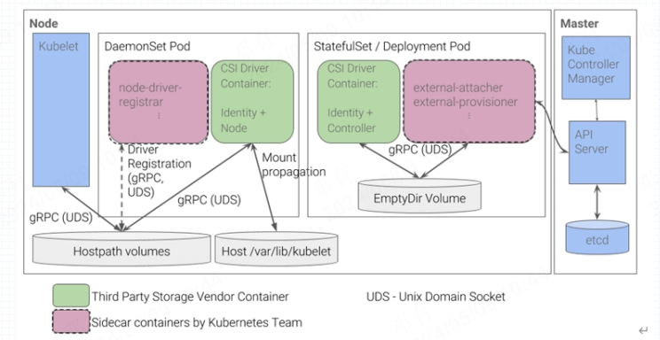
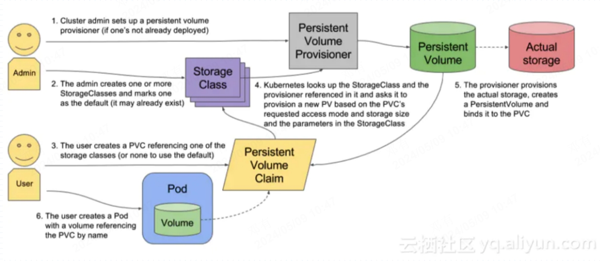

kubernetes存储方案
kubernetes存储卷
官网 :
https://kubernetes.io/zh-cn/docs/concepts/storage/volumes/
Pod有生命周期，生命周期结束后，或者Pod被销毁然后调度到其它节点上，那么Pod里面的数据(如配置文件、业务数据等)就会丢失，这是我们不想看到得，于是为了解决Pod与数据持久化问题，kubernetes使用分离得方式提供持久存储给Pod使用，这就是存储卷。
数据与pod分离
容器挂载volume
 存储卷分类
通过官网，可以看出kubernetes支持众多的存储卷，这些卷可以进行简单分类：
本地存储卷
emptyDir: pod删除，书也会被清楚，常用于临时存储数据或Pod内容器共享数据
hostPath：宿主机目录映射(本地存储卷)
网络存储卷
NAS
nfs
SAN
iscsi
FC
分布式存储
glusterfs
ceph
云存储
aws
azurefile
存储卷选择
市面上的存储产品种类繁多，但是按应用角度主要非为三类
文件存储：nfs，glusterfs， cephfs
优点：数据共享，多个pod可以同读同写
缺点：性能较差
块存储： iscsi， rbd
优点：性能对比文件存储要好
缺点： 对于某些块存储数据不共享
对象存储： ceph 对象存储
优点：性能好，数据共享
缺点：使用方式特殊，支持较少
面对kubernetes支持形形色色的存储卷，我们在选择存储卷时需要抓住核心需求：
数据是否要持久化
数据可靠性，能否允许单点故障
性能
扩展性，是否方便快速扩容
运维难度，尽量选择稳定的开源或者商业产品
成本
本地存储卷
emptyDir
应用场景：实现pod内容器数据共享
特点：pod消失，数据也会被删除
1.创建Pod
volumes]# cat vol-pod-emptydir.yaml
---
apiVersion: v1
kind: Pod
metadata:
name: vol-pod-emptydir
spec:
containers:
- name: write
image: busybox:1.28
command: ['sh', "-c", "while true;do echo $(date +%F_%H:%M:%S) >> /data/data.html； sleep 3;done"]
volumeMounts:
- name: share-vol
mountPath: /data
- name: read
image: nginx:1.20-alpine
volumeMounts:
- name: share-vol
mountPath: /usr/share/nginx/html
volumes:
- name: share-vol
emptyDir: {}
[root@k8s-master-01 volumes]# kubectl apply -f vol-pod-emptydir.yaml
2.验证Pod
volumes]# kubectl get pod -o wide
NAME READY STATUS RESTARTS AGE IP NODE NOMINATED NODE READINESS GATES
vol-pod-emptydir 2/2 Running 0 8s 10.244.36.210 k8s-worker-01 <none> <none>
[root@k8s-master-01 volumes]# curl 10.244.36.210/data.html
2024-05-09_02:01:20
2024-05-09_02:01:23
2024-05-09_02:01:26
2024-05-09_02:01:29
2024-05-09_02:01:32
hostPath
应用场景：pod数据保存到集群节点路径
缺点：pod调度到其它机器后，数据会丢失，可以通过绑定到固定节点的方式解决这个问题,无法实现数据共享
1.创建Pod
cat vol-pod-hostPath.yaml
---
apiVersion: v1
kind: Pod
metadata:
name: vol-pod-hostpath
spec:
containers:
- name: nginx
image: nginx:1.20-alpine
volumeMounts:
- name: html
mountPath: /usr/share/nginx/html
volumes:
- name: html
hostPath:
path: /opt # 目录需要在机器上存在
type: Directory
网络存储卷NFS
搭建NFS服务
推荐使用集群外的单独的机器搭建nfs服务
mkdir /data/nfs
yum install nfs-utils -y
echo "/data/nfs *(rw,no_root_squash,sync)" >> /etc/exports
systemctl enable nfs-server --now
所有的集群节点安装nfs客户端，以便k8s节点挂载nfs卷
yum install nfs-utils -y
# 验证nfs的可用性
~]# showmount -e 10.4.111.141
Export list for 10.4.111.141:
/data/nfs *
使用NFS存储
1.创建Deployment使用nfs
volumes]# cat vol-deploy-nginx-nfs.yaml
---
apiVersion: apps/v1
kind: Deployment
metadata:
name: nginx
spec:
replicas: 3
selector:
matchLabels:
app: nginx
template:
metadata:
labels:
app: nginx
spec:
containers:
- name: nginx
image: nginx:1.20-alpine
volumeMounts:
- name: nfs-data
mountPath: /usr/share/nginx/html
volumes:
- name: nfs-data
nfs:
server: 10.4.111.141
path: /data/nfs
[root@k8s-master-01 volumes]# kubectl apply -f vol-deploy-nginx-nfs.yaml
deployment.apps/nginx created
2.验证数据共享
# 在nfs机器上执行
~]# echo "this is nfs data." > /data/nfs/index.html
# 通过pod IP访问nfs数据
volumes]# kubectl get pod -o wide
NAME READY STATUS RESTARTS AGE IP NODE NOMINATED NODE READINESS GATES
nginx-7fdbcfb5b4-c92q6 1/1 Running 0 4m14s 10.244.36.211 k8s-worker-01 <none> <none>
nginx-7fdbcfb5b4-dr59z 1/1 Running 0 4m14s 10.244.118.82 k8s-worker-02 <none> <none>
nginx-7fdbcfb5b4-s5jmh 1/1 Running 0 4m14s 10.244.7.150 k8s-worker-03 <none> <none>
volumes]# curl 10.244.36.211
this is nfs data.
volumes]# curl 10.244.118.82
this is nfs data.
volumes]# curl 10.244.7.150
this is nfs data.
持久卷PV和声明PVC
官网 :
https://kubernetes.io/zh-cn/docs/concepts/storage/persistent-volumes/
kubernetes的存储卷太丰富了，每周类型需要写相应接口和参数才能使用，这就让维护和管理难度加大，为了解决这种问题，kubernetes引入了pv和pvc的概念，从而用户不需要了解底层存储卷的实现细节，就可以使用任意类型的存储卷了，真正实现”存储和管理分离”。
PersistentVolume(PV): 持久卷，定义存储卷的大小，类型
生产者
提供存储资源
PersistentVolumeClaim: 持久卷声明，定义持久卷如何使用
消费者
绑定存储

实现NFS类型的PV与PVC
前提：准备好NFS服务器
~]# showmount -e 10.4.111.141
Export list for 10.4.111.141:
/data/nfs *
1.编写YAML文件创建PV
nfs]# cat pv.yaml
---
apiVersion: v1
kind: PersistentVolume
metadata:
name: pv-nfs # PV是集群资源类型的资源，不需要定义namespace
spec:
capacity:
storage: 1Gi # 定义存储资源的大小
accessModes:
- ReadWriteMany # 访问模式
nfs:
server: 10.4.111.141
path: /data/nfs/pv1 # 此路径如果是nfs的子路径，则需要在nfs服务器上存在，否则创建pod会失败
[root@k8s-master-01 nfs]# kubectl apply -f pv.yaml
nfs]# kubectl get pv -o wide
NAME CAPACITY ACCESS MODES RECLAIM POLICY STATUS CLAIM STORAGECLASS REASON AGE VOLUMEMODE
pv-nfs 1Gi RWX Retain Available 7m21s Filesystem
访问模式 有三种
ReadWriteOnce: 卷可以被一个节点以读写方式挂载,简写RWO
ReadOnlyMany: 卷可以被多个节点以只读方式挂载，简写ROX
ReadWriteMany: 卷可以被多个节点以读写方式挂载，简写RWO
cephfs存储卷三种模式都支持，如果要实现快捷带你之间共享数据应该使用 ReadWriteMany模式
2.编写YAML文件创建PVC
nfs]# cat pvc-nfs.yaml
---
apiVersion: v1
kind: PersistentVolumeClaim
metadata:
name: pvc-nfs
namespace: test
spec:
accessModes:
- ReadWriteMany
resources:
requests:
storage: 1Gi
nfs]# kubectl apply -f pvc-nfs.yaml
nfs]# kubectl get pvc -n test
NAME STATUS VOLUME CAPACITY ACCESS MODES STORAGECLASS AGE
pvc-nfs Bound pv-nfs 1Gi RWX 6s
3.编写Deploy使用PVC的YAML资源
nfs]# cat deploy-pvc-nginx.yaml
---
apiVersion: apps/v1
kind: Deployment
metadata:
name: nginx
namespace: test
spec:
replicas: 3
selector:
matchLabels:
app: nginx
template:
metadata:
labels:
app: nginx
spec:
containers:
- name: nginx
image: nginx:1.20-alpine
volumeMounts:
- name: html
mountPath: /usr/share/nginx/html
volumes:
- name: html
persistentVolumeClaim:
claimName: pvc-nfs
nfs]# kubectl apply -f deploy-pvc-nginx.yaml
4.验证
# 在nfs服务器中提供数据
~]# echo "this is pv1 on nfs server." > /data/nfs/pv1/index.html
# 通过PodIP访问数据
nfs]# kubectl get pod -n test -o wide
NAME READY STATUS RESTARTS AGE IP NODE NOMINATED NODE READINESS GATES
nginx-66958bf88f-b94k7 1/1 Running 0 4m14s 10.244.36.213 k8s-worker-01 <none> <none>
nginx-66958bf88f-nprmv 1/1 Running 0 4m14s 10.244.7.152 k8s-worker-03 <none> <none>
nginx-66958bf88f-wzflp 1/1 Running 0 4m14s 10.244.118.84 k8s-worker-02 <none> <none>
nfs]# curl 10.244.7.152
this is pv1 on nfs server.
subPath自动创建NFS目录
1.创建YAML资源清单
nfs]# cat all-nfs-subpath.yaml
---
apiVersion: v1
kind: PersistentVolume
metadata:
name: pv-nfs-2 # PV是集群资源类型的资源，不需要定义namespace
spec:
capacity:
storage: 1Gi # 定义存储资源的大小
accessModes:
- ReadWriteMany # 访问模式
nfs:
server: 10.4.111.141
path: /data/nfs/ # nfs导出目录
---
apiVersion: v1
kind: PersistentVolumeClaim
metadata:
name: pvc-nfs-2
namespace: test
spec:
accessModes:
- ReadWriteMany
resources:
requests:
storage: 1Gi
---
apiVersion: apps/v1
kind: Deployment
metadata:
name: nginx
namespace: test
spec:
replicas: 3
selector:
matchLabels:
app: nginx
template:
metadata:
labels:
app: nginx
spec:
containers:
- name: nginx
image: nginx:1.20-alpine
volumeMounts:
- name: html
mountPath: /usr/share/nginx/html
subPath: html # 使用subPath会自动在nfs server共享出来的/data/nfs/目录下自动创建html目录
volumes:
- name: html
persistentVolumeClaim:
claimName: pvc-nfs-2
nfs]# kubectl apply -f all-nfs-subpath.yaml
2.验证
# 1. nfs服务器创建文件
~]# echo "this is subpath create dir." > /data/nfs/html/index.html
# 2. 通过podip访问
nfs]# kubectl get pod -n test -o wide
NAME READY STATUS RESTARTS AGE IP NODE NOMINATED NODE READINESS GATES
nginx-59b8d74b6c-9nhk7 1/1 Running 0 67m 10.244.118.85 k8s-worker-02 <none> <none>
nginx-59b8d74b6c-bqjvg 1/1 Running 0 67m 10.244.7.153 k8s-worker-03 <none> <none>
nginx-59b8d74b6c-fzjx8 1/1 Running 0 67m 10.244.36.214 k8s-worker-01 <none> <none>
[root@k8s-master-01 nfs]# curl 10.244.36.214
this is subpath create dir.
存储类StorageClass
官网 :
https://kubernetes.io/zh-cn/docs/concepts/storage/storage-classes/#nfs
每次使用存储时，需要预先创建存储，然后通过PVC来声明存储的使用，这样的工作比较繁琐，有没有简单高效的办法使用存储呢？答案是有的，Kubernetes v1.4版本引入一个新的资源对象 StorageClass 存储类，用户无需预先创建存储，而是在使用时，通过PVC自动向存储类按需自动创建PV。
基于NFS实现动态供给
官网的插件是不支持NFS动态供给的，但是可以通过第三方插件实现。 第三方插件的访问地址：
创建nfs服务
# 建议使用集群外的单独的一台机器提供nfs服务
mkdir /data/nfs
yum install nfs-utils -y
echo "/data/nfs *(rw,no_root_squash,sync)" >> /etc/exports
systemctl enable nfs-server --now
# 所有的集群节点安装nfs客户端，以便k8s节点挂载nfs卷
yum install nfs-utils -y
# 验证nfs的可用性
~]# showmount -e 10.4.111.141
Export list for 10.4.111.141:
/data/nfs *
2.获取nfs插件配置文件
wget https://raw.githubusercontent.com/kubernetes-sigs/nfs-subdir-external-provisioner/master/deploy/class.yaml
wget https://raw.githubusercontent.com/kubernetes-sigs/nfs-subdir-external-provisioner/master/deploy/rbac.yaml
wget https://raw.githubusercontent.com/kubernetes-sigs/nfs-subdir-external-provisioner/master/deploy/deployment.yaml
3.配置deployment文件
nfs]# diff deployment.yaml{,.bak}
24c24
< image: k8s.dockerproxy.com/sig-storage/nfs-subdir-external-provisioner:v4.0.2 # 修改镜像地址
---
> image: registry.k8s.io/sig-storage/nfs-subdir-external-provisioner:v4.0.2
32c32
< value: 10.4.111.141 # 修改成NFS IP
---
> value: 10.3.243.101
34c34
< value: /data/nfs # 修改 nfs导出目录
---
> value: /ifs/kubernetes
38,39c38,39
< server: 10.4.111.141 # 修改成NFS IP
< path: /data/nfs # 修改 nfs导出目录
---
> server: 10.3.243.101
> path: /ifs/kubernetes
4.应用资源清单
nfs]# kubectl apply -f rbac.yaml -f deployment.yaml -f class.yaml
nfs]# kubectl get pod
NAME READY STATUS RESTARTS AGE
nfs-client-provisioner-748c677bb5-rf655 1/1 Running 0 26s
nfs]# kubectl get storageclass
NAME PROVISIONER RECLAIMPOLICY VOLUMEBINDINGMODE ALLOWVOLUMEEXPANSION AGE
nfs-client k8s-sigs.io/nfs-subdir-external-provisioner Delete Immediate false 5m37s
5.将nfs-client设置成默认sc(可选)
nfs]# kubectl patch storageclass nfs-client -p '{"metadata": {"annotations":{"storageclass.kubernetes.io/is-default-class":"true"}}}'
nfs]# kubectl get storageclass
NAME PROVISIONER RECLAIMPOLICY VOLUMEBINDINGMODE ALLOWVOLUMEEXPANSION AGE
nfs-client (default) k8s-sigs.io/nfs-subdir-external-provisioner Delete Immediate false 7m39s
6.验证NFS动态供给
# 这里创建一个StatefulSet 资源来验证
apiVersion: v1
kind: Secret
metadata:
name: mysqlpwd
data:
password: cm9vdDEyMw== # root123
---
apiVersion: v1
kind: Service
metadata:
name: mysql
labels:
app: mysql
spec:
type: ClusterIP
selector:
app: mysql
ports:
- port: 3306
protocol: TCP
clusterIP: "None"
---
apiVersion: apps/v1
kind: StatefulSet
metadata:
name: mysql
spec:
selector:
matchLabels:
app: mysql
serviceName: mysql
replicas: 1
template:
metadata:
labels:
app: mysql
spec:
terminationGracePeriodSeconds: 10
containers:
- name: mysql
image: mysql:8
ports:
- containerPort: 3306
name: mysql
env:
- name: MYSQL_ROOT_PASSWORD
valueFrom:
secretKeyRef:
name: mysqlpwd
key: password
- name: MYSQL_DATABASE
value: "todo_db"
volumeMounts:
- mountPath: /var/lib/mysql
name: volume
volumeClaimTemplates:
- metadata:
name: volume
spec:
storageClassName: nfs-client
accessModes: [ "ReadWriteOnce" ]
resources:
requests:
storage: 1Gi
nfs]# kubectl apply -f statefulset-mysql.yaml
nfs]# kubectl get pv
NAME CAPACITY ACCESS MODES RECLAIM POLICY STATUS CLAIM STORAGECLASS REASON AGE
pvc-7c99239c-a9e5-477d-9565-488ca363d182 1Gi RWO Delete Bound default/volume-mysql-0 nfs-client 95s
[root@k8s-master-01 nfs]# kubectl get pvc
NAME STATUS VOLUME CAPACITY ACCESS MODES STORAGECLASS AGE
volume-mysql-0 Bound pvc-7c99239c-a9e5-477d-9565-488ca363d182 1Gi RWO nfs-client 102s
[root@k8s-master-01 nfs]# kubectl get pod
NAME READY STATUS RESTARTS AGE
mysql-0 1/1 Running 0 105s
# nfs服务导出目录会自动创建一个目录
~]# ls /data/nfs/
default-volume-mysql-0-pvc-7c99239c-a9e5-477d-9565-488ca363d182
pv会以
${namespace}-${pvcName}-${pvName}的命名格式在NFS服务器上自动创建